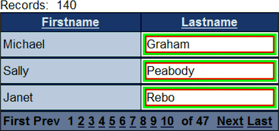

Comparing Control and Cell In-Line Properties
The appearance of a control and the grid cell that contains it are set by the style sheet attached to the grid component. When using the Grid or Dialog Component Builders, you will notice that there are two properties that will override style sheet settings. These are:
Control (Label, TextBox, Image, etc.) Properties > In-line style
Column (or Row) Properties > Cell in-line style
Here is what the two properties do. The picture below was enlarged to make it easier to understand.

The picture shows two columns from a grid component. The left column shows the default style of the "Blueberry" style sheet. The right column shows the effect of the two in-line style properties.
|
Property |
Effect of Control In-line Style |
Effect of Column In-line Style |
|
Font Attributes |
You can set any font attribute. The settings here override the settings of the column in-line style. |
You can set any font attribute. |
|
Background Color |
This sets the background color for the text. In the Lastname column above the color is white (#FFFFFF). |
This sets the background color for the cell. In the Lastname column above the color is green (#00FF00). |
|
Border Attributes |
This sets the border color and border thickness for the text block. In the Lastname column above the color is red (#FF0000) and 2 pixels thick. |
This sets the border color and border thickness for the cell block. In the Lastname column above the color is white (#FFFFFF) and 2 pixels thick. |
See Also
Setting Grid Properties, Setting Grid Control Properties
Limitations
Web publishing applications only.